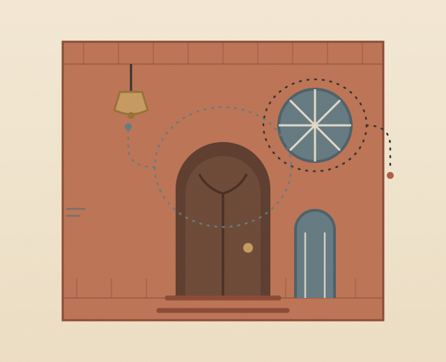
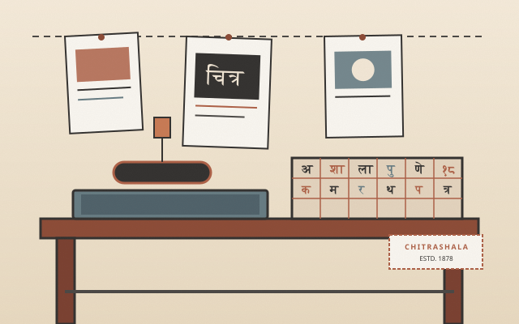
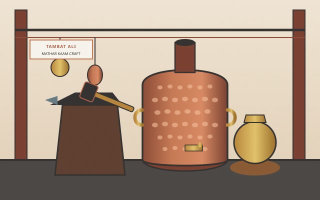
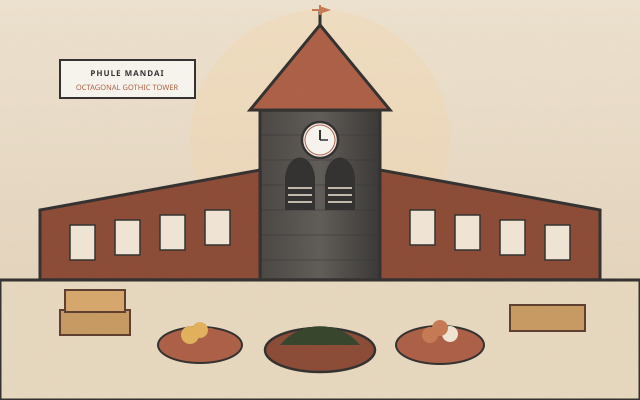
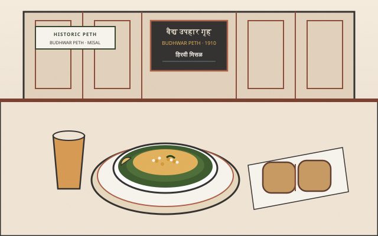
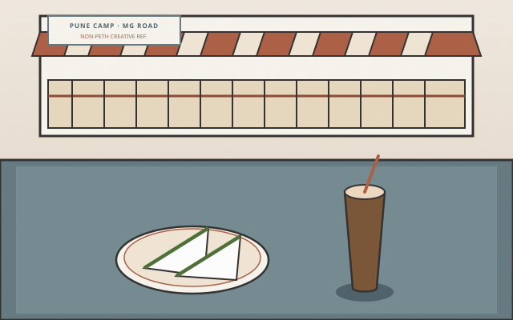
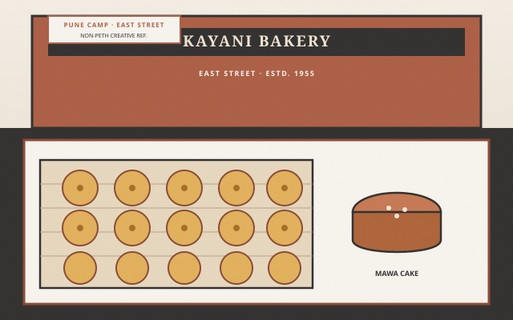
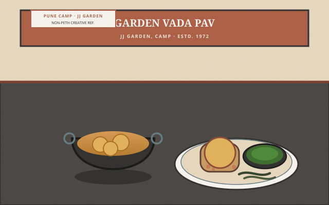

01
Vernacular Architecture
Notice the craftsmanship in carved timber brackets, basalt stone plinths, traditional lintels, and the courtyard wada layouts that shape neighbourhood character.
Pune’s Historic Peths · Observant Cultural Walking
Pune, read closer. · The City Between the Landmarks
Between celebrated monuments and hurried commutes lies an intricate everyday city—press lithographs, beaten copper workshops, wholesale market halls, and multigenerational tea counters. Sheharnaama approaches Pune through its quiet cultural details, inviting culturally curious residents to observe familiar streets with fresh attention.

Brand Purpose & Perspective
For those who live and commute in Pune, the historic Peths are familiar thoroughfares. Yet between the prominent monuments and busy market junctions lies an intricate layer of vernacular timberwork, generational craft, and everyday neighbourhood life that easily goes unnoticed. Sheharnaama was created to cultivate a slower, more observant way of seeing the city you call home.

01
Notice the craftsmanship in carved timber brackets, basalt stone plinths, traditional lintels, and the courtyard wada layouts that shape neighbourhood character.

02
Appreciate the skills, memories, and everyday traditions of brass-smiths, potters, and neighbourhood stewards who keep traditional arts thriving in the heart of old Pune.

03
Observe the morning market rhythms, iconic tea stalls, colonnades, and daily rituals that give the historic Peths their unique warmth and living personality.
Audience Perspective
Whether you navigate these lanes every week or are encountering old Pune for the first time, select your perspective below to explore how Sheharnaama frames your walk.
Familiar streets, seen with fresh attention.
You commute or shop in old Pune every week. You know the bustle around Mandai, the shortcuts through Raviwar Peth, and the tea stalls near Shaniwar Wada. Sheharnaama invites you to pause the rush: notice the carved teak brackets overhead, the basalt thresholds worn smooth by centuries, and the multigenerational craft communities that give your city its enduring character.
“People can know a neighbourhood’s streets without noticing all the details that shape its character.”
A mindful walking experience designed to rediscover the rich layers of your own city.
Collegiate societies, design studios, architecture students, and circles of friends seeking a contemplative, culturally grounded shared walk through Pune’s historic core.
Small, capped groups (8–12 guests) ensure minimal foot-traffic impact, unhurried conversations, and deep respect for residential life and quiet heritage lanes.
Editorial Feature · #WhatLiesBetween
Print, craft, market life and familiar food. A closer look at the details that give a city its character.
Showing 7 references across all categories.

The press that democratised print in western India. From hand-carved Devanagari letterpress to lithographic prints, it transformed Pune’s vernacular visual culture.
Editorial Reference: Inspires our visual identity and editorial layout; proposed as an observant walking touchpoint.

The rhythmic acoustic pulse of hand-beaten copper and brass. An enduring community of metalsmiths shaping traditional water boilers and vessels with hammer and anvil.
Artisan Respect: Workshop observations are conducted strictly with advance agreement to respect daily craft flow.

An imposing 80-foot central octagonal gothic basalt tower anchoring eight radiating market wings. The living commercial pulse of Pune’s morning market life.
Market Cadence: Early morning walks observe the transition from wholesale arrivals to neighbourhood commerce.

Pune’s legendary century-old upahar gruha, celebrated for its fiery green-chilli misal served in classic wooden booths near Phadke Houd.
Tasting Protocol: Optional cultural food moments on the walk are contingent on confirmed arrangements.

A colonial-era heritage cafe on Main Street with carved wooden balcony railings, renowned for its fresh green-chutney sandwiches and cold coffee.
Editorial Creative Reference: Shapes the brand’s broader Pune culinary appreciation; not an included stop on the Peth walk.

The iconic Parsi bakery on East Street famous across India for buttery Shrewsbury biscuits, spiced mawa cakes, and strictly timed batches.
Editorial Creative Reference: Celebrated as a landmark of Pune’s baking culture; not an included stop on the Peth walk.

Beloved street snacking landmark near JJ Garden, known for its oversized, crispy potato vadas paired with signature green coriander-chilli chutney.
Editorial Creative Reference: Inspires our appreciation of Pune’s street food rhythms; not an included stop on the Peth walk.
Signature Walking Experience
An observant, story-led walk through Pune’s historic Peth neighbourhoods. Guided by architectural and cultural narratives rather than a checklist, inviting guests to slow down and observe familiar streets with fresh eyes.

Key experience highlights
Upcoming Walk Schedule
Upcoming weekend dates for the Peth Stories Walk. Select an open session below to register your interest.
Loading upcoming walks…
The Sheharnaama Story Passport
A neighbourhood walk deserves more than a hurried photograph. The Story Passport is a journal‑inspired keepsake designed to help you record the architectural details, neighbourhood stamps, and moments that made your walk personal.
Mark the architectural moments and neighbourhood stops that made an impression.
Keep a handwritten reflection, a sketch of a timber bracket, or a street detail worth remembering.
Digital links connect physical passport pages directly to archival photos, audio stories, and architectural deep-dives.
Join the Walk
We are shaping our initial Sheharnaama pilot walks in Pune’s historic Peths. Share your interest to help us understand preferred dates, group size, and experience requirements.
Questions & Clarity
Sheharnaama is a contemporary heritage-walking brand focused on Pune’s historic Peth neighbourhoods. We design observant, story-led walks that invite Pune residents and thoughtful visitors to notice the architecture, people, and daily life between celebrated landmarks.
The setting is strictly Pune’s historic Peth neighbourhoods. The exact route and confirmed public meeting point will be shared directly with registered participants prior to the pilot walk.
The walk is created for anyone curious about Pune’s living culture, vernacular architecture, and historic neighbourhoods — especially locals looking to rediscover familiar streets with fresh eyes, as well as culturally curious travelers.
Each walk lasts approximately 90–120 minutes. We cap group sizes at 8–12 guests to ensure an unhurried pace, intimate conversations, and deep respect for neighbourhood residents.
Yes, walks include curated pauses at generational craft workshops and an authentic local tea stop, coordinated thoughtfully with neighbourhood artisans.
The Story Passport is a journal-inspired physical keepsake provided to participants to collect stamps, record sketches, and keep personal observations from the walk.
Simply fill out the form above. There is no upfront payment required — we will contact you directly with confirmed dates, meeting locations, and walk details.
Detailed accessibility notes will be provided once the specific pilot route is confirmed. Please share any access or mobility preferences in the registration notes so we can accommodate them thoughtfully.
Take the slower lane. Notice the details. Read the city between the landmarks.